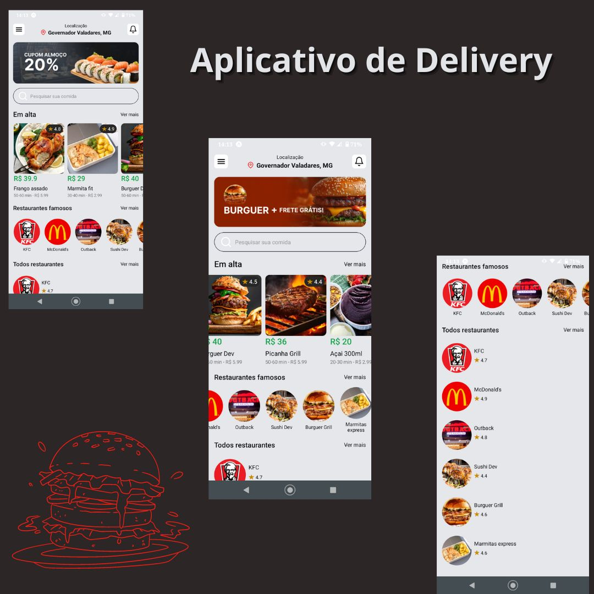
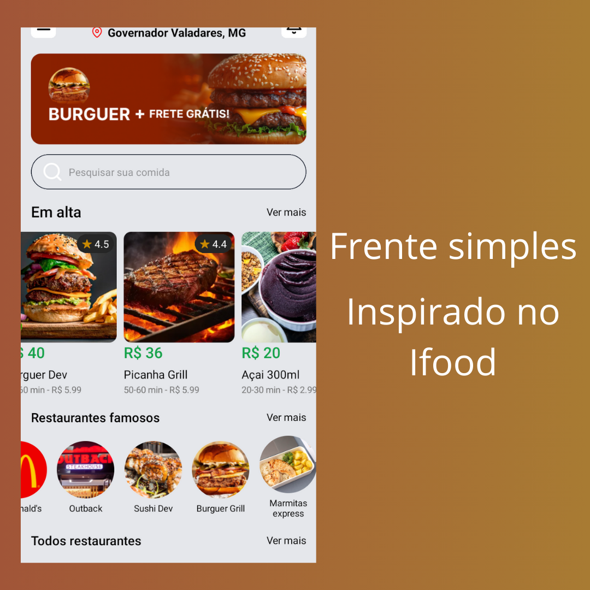
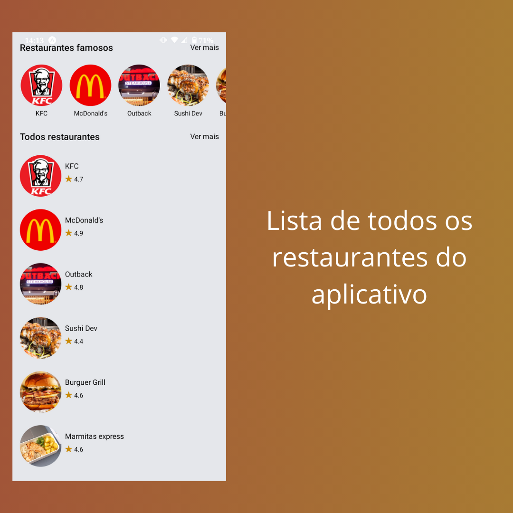

Este é um aplicativo criado usando React Native e Tailwind CSS.
Foi utilizado o Expo para ter maior facilidade no desenvolvimento do sistema sem ter que estudar a fundo linguagens para desenvolvimento mobile, tais como Kotlin para android e Swift para IOS.
Foi desenvolvido apenas um layout da página frontal do aplicativo. Ao construir esse aplicativo, eu tive noção de como utilizar o React Native.
Desenvolver esse projeto foi o start para eu começar a estudar React Native.

